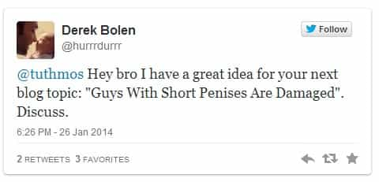
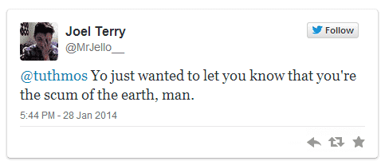
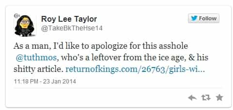
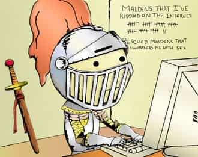

< < < Back
The White Knight Landing Page – Return Of Kings
Note to Non-White Knights: Internet heroics on behalf of women by self-declared protectors are epidemic. No one knows this better than I, who am constantly barraged by attacks from these electronic tough guys. This was especially the case after each of my viral articles 5 Reasons to Date a Woman With an Eating Disorder, 24 Signs She’s a Slut, and Girls With Short Hair Are Damaged. But I’m by no means the only victim. This is everywhere.
That’s where this page comes in. My experience in the past few months—of trying to respond individually to all of the various heroes who have stepped in to fight for women they don’t even know—has alerted me to the value of creating a form letter than would do it for me. Enter: The White Knight Landing Page.
Just like I will do from now on, every time you see a white knight spring into superhero action, just send them a link to this page. It will do the rest of the work.
White Knight Section
Dear Lancealot:
Welcome to the Return of Kings White Knight Landing Page. You’re here because someone you know online, or in person, thinks you’re probably a white knight. Chances are: he’s right. This page will explain to you what a white knight is, why you probably are one, and what to do about it.
It’s in everyone’s best interest that you read this carefully.
Regards,
The Return of Kings Staff
White Knight Information Sheet
What’s a White Knight?
White knightism manifests itself in a variety of ways, but probably the most common manifestation is running to the “protection” or “defense”—of usually a stranger—just because she’s female, with little or no consideration other factors. Online, that often translates into attacking another guy when you think he’s unfairly criticized or “bullied” a girl, or a certain group of women. The key part is that you’re standing up for what’s essentially a complete stranger because she’s a woman and therefore, in your eyes, defenseless. Hence the name. You’re the knight in shining armor coming to the rescue of a damsel in distress.
White knights often pepper their statements with “bro,” “dude,” or “man” in an attempt to “level” with the other guy or to put on a tough-guy act. They also often claim to speak for all men. The preface “as a man” is the absolute calling card of the white knight.



There are lots of theories for what drives guys to do this, but there’s no question that an old-fashioned notion—ironically, even-more-sexist through its condescension—of men’s role in the world is at the heart of it. A distorted concept of “justice” is also a culprit. Feminism, which talks out of both sides of its mouth by simultaneously declaring women strong and independent, on the one hand, while, on the other, brokering in an endless series of victim narratives (which white knights swallow, hook, line, and sinker), plays a major role.
Hollywood (and Bollywood) for all of its supposed forward-looking permissiveness, is one of major disseminators of this elaborate mythology.
White knightism isn’t just an online phenomenon. There’s also an older, face-to-face version of it which, though increasingly rare, you still see in bars and clubs. Interrupting statements like “Don’t talk to her like that!” or “Are you okay?” are usually a signal that the in-person white-knighting act is in progress. While this may have required some tiny degree of courage in the past, white knightism is fundamentally a cowardly act today. It’s supremely low risk, since white knights can be 99.9% certain that they won’t get punched in the face for butting in.
Online white knighting is even cheaper, since it carries an even higher likelihood that no consequences will come of it. It’s almost always, at its core, an attempt to score points with women.
Women Are Always Right. Men Are Villains.
You can’t have a hero without a villain, and that villain is invariably whatever man is distressing the damsel. White knightism is grounded in the fundamental belief that women can do no harm (i.e., are never really at fault for anything, or did anything to bring on whatever situation they find themselves in). But, it also features a huge placing-on-the-pedestal component. White knights lavish women with (usually undeserved and inaccurate) compliments. All women all beautiful. All criticism of them is “bullying,” or an inability to appreciate them as women. Thirst and white-knightism are, in medical terms, often comorbid.
“She Shouldn’t Be With Him.”
Cockblocking is also a common symptom. The white knight will often intervene in a potentially romantic situation if he deems a girl shouldn’t be interested in a man for whom she’s displayed interest. That could mean when he’s not in the room. “That dude is a player.” Or, it could also happen with him in the room—with a well-placed interruption, an attempt to insult the man in front of the girl, or by physically pulling the girl away from him. He sees the other man as unworthy for this girl—maybe even branding labeling him as “creepy” to her—and will unilaterally make that decision for her.
She’s “too drunk” (even though she’s sober), she’s “going through a hard time right now” (even though she’s obviously looking), she’s “doesn’t like guys like you” (even though she does). He’ll stop at nothing.
This is a growing problem, since major institutions, including the President of the United States, are actively encouraging this form of white knighting—unsurprisingly, under the catch-all bugbear of “campus sexual assault.”
Skip to 0:38:
Why You Do It.
White knightism is caused by a mix of factors. In the broadest sense, it’s a product of brainwashing about girls that paints them as the more evolved sex—that never lies, cheats, or harms others without some man having encouraged her. Our legal system, to a large extent, is based on a White Knight Ethos. Women get lighter sentences for the same crime as men, and are almost always given the benefit of the doubt by responding police officers. Bouncers will always kick out the man, even if the woman instigated the conflict. After all, “you should never hit a woman.”
Skip to 0:20:
It Won’t Get You Laid and Turns Girls Into Bitches.
White knights frequently harbor unrequited desires for their damsel. They’re secretly hoping to curry favor with their girl—or women in general—which will hopefully lead to something. The thing is: it won’t. Women, even though they may talk a big game, secretly loathe white knights for the disingenuous cowards that they are. They’d never sleep with one. They might friendzone one, but that’s about it.

However, women do use and abuse these unsolicited protectors for other purposes. And, like the banks, every undeserved bailout feeds a downward spiral of growing hubris and cuntiness. Every time a girl pours a drink on a guy in a bar or initiates physical violence with a man, it’s with the full faith and confidence that there’s a room full of would-be white knights on her side. Not only that, she knows cops and bouncers will take her word over any guy’s. That same girl would never, in a million years, get in a guy’s face in a room with just the two of them or with a truly equal system in place.
Women Are Perfectly Capable of Taking Care of Themselves.
White Knights are cowards and hypocrites, but also fundamentally sexist. They condescend to women—who are perfectly capable of taking care of themselves (especially online)—by taking it upon themselves to be their protectors. When I criticize a woman, I do it as an equal. I say what I would say to a man doing the same thing.
White Knights know that they’re probably not going to suffer an attack as a result of their heroics. If tomorrow, people started getting punched in the face for butting into other people’s business, white knightism would plummet overnight. That makes the average white knight a coward.
War On White Knights
Today I’m calling for a war on white knights. Every time you see one of these cowardly specimens in action, do everything in your power—within the law—to expose, shame, and harm them. Not until we shine light on this pitiful behavior will we end this epidemic.
And achieve true gender equality.
Read More: 7 Traits of the Male Feminist


{kind=link}
{kind=link}
{kind=link}
{kind=link}